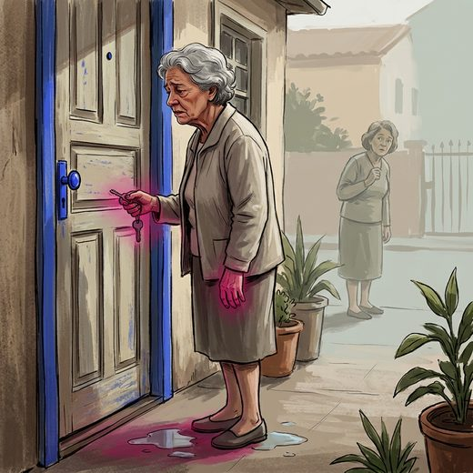

Consulta rápida à beira do leito
Condutas, doses e interações.
Referências da aula · 11
- Sánchez-Sánchez JL, Lu WH, Gallardo-Gómez D, et al. Association of intrinsic capacity with functional decline and mortality in older adults: a systematic review and meta-analysis of longitudinal studies. Lancet Healthy Longev. 2024;5(7):e480-e492. doi:10.1016/S2666-7568(24)00092-8.DOI
- Tamanini JTN, Dambros M, D'Ancona CAL, Palma PCR, Rodrigues Netto N Jr. Validação para o português do International Consultation on Incontinence Questionnaire – Short Form (ICIQ-SF). Rev Saude Publica. 2004;38(3):438-44. PMID 15243675. doi:10.1590/s0034-89102004000300015.PubMedDOI
- Nambiar AK, Arlandis S, Bø K, et al. European Association of Urology Guidelines on the Diagnosis and Management of Female Non-neurogenic Lower Urinary Tract Symptoms. Part 1. Eur Urol. 2022;82(1):49-59. doi:10.1016/j.eururo.2022.01.045. PMID 35216856.PubMedDOI
- 2023 American Geriatrics Society Beers Criteria® Update Expert Panel. American Geriatrics Society 2023 updated AGS Beers Criteria® for potentially inappropriate medication use in older adults. J Am Geriatr Soc. 2023;71(7):2052-81. PMID 37139824. doi:10.1111/jgs.18372.PubMedDOI
- Freitas EV, Py L, organizadores. Tratado de Geriatria e Gerontologia. 5ª ed. Rio de Janeiro: Guanabara Koogan; 2022.
- Gibson W, Johnson T, Kirschner-Hermanns R, et al. Incontinence in frail elderly persons: Report of the 6th International Consultation on Incontinence. Neurourol Urodyn. 2021;40(1):38-54. PMID 33085806. doi:10.1002/nau.24549.PubMedDOI
- Gray SL, Anderson ML, Dublin S, Hanlon JT, Hubbard R, Walker R, et al. Cumulative use of strong anticholinergics and incident dementia: a prospective cohort study. JAMA Intern Med. 2015;175(3):401-7. PMID 25621434. doi:10.1001/jamainternmed.2014.7663.PubMedDOI
- Burgio KL, Locher JL, Goode PS, Hardin JM, McDowell BJ, Dombrowski M, et al. Behavioral vs drug treatment for urge urinary incontinence in older women: a randomized controlled trial. JAMA. 1998;280(23):1995-2000. PMID 9863850. doi:10.1001/jama.280.23.1995.PubMedDOI
- Resnick NM. Urinary incontinence. Lancet. 1995;346(8967):94-9. PMID 7603221. doi:10.1016/s0140-6736(95)92117-6.PubMedDOI
- Resnick NM, Yalla SV. Detrusor hyperactivity with impaired contractile function. An unrecognized but common cause of incontinence in elderly patients. JAMA. 1987;257(22):3076-81. PMID 3586227. doi:10.1001/jama.257.22.3076.PubMedDOI
- Rochon PA, Gurwitz JH. Optimising drug treatment for elderly people: the prescribing cascade. BMJ. 1997;315(7115):1096-9. PMID 9366745. doi:10.1136/bmj.315.7115.1096.PubMedDOI
Documentos oficiais
Leis e publicações do Ministério da Saúde sobre o cuidado da pessoa idosa, de acesso livre.
Abrir os documentos